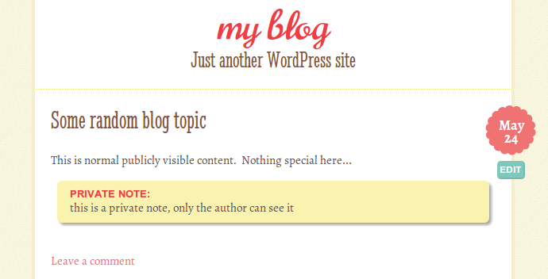

Description
Lets the author add private notes to a post that only the author can see. Just use a note code, like this [note] my private note [/note] and then it won't be shown publicly but will be rendered in a div tag with class "private-note" so an admin can style the div.
Installing
Download the archive from the github link above then form inside there copy the PrivateNotes.zip to your /wp-content/plugins directory or upload PrivateNotes.zip via http://[yoursiteurl.com]/wp-admin/plugin-install.php?tab=upload Then activate the plugin.
How to Use
Once activated in WordPress, simply add the following shortcode in your posts:
[note] This is a personal note that only admins can see! [/note]
If you have publishing rights (aka the blog owner/author), then the note will be displayed in a div with a private-note class, so you can use it to give a specific style to your notes. The text won't show at all for normal visitors.
<div class="private-note"> This is a personal note that only admins can see! </div>
Screenshot
Here's what it looks like viewing a post as an admin.
The privates note box doesn't show at all if you're a visitor.

Credits
Thanks to @catswhocode for his post which IS this plugin he shared on his post at http://www.wprecipes.com/add-private-notes-to-your-wordpress-blog-posts